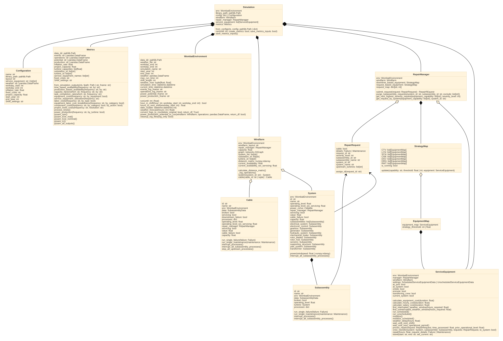

Simulation Tools and Methodology
Contents
Simulation Tools and Methodology#
Simulation Classes#
There are a variety of components that enable a simulation to be run, from the environment, to the windfarm and its composition, and the servicing equipment. The below will show how each of the APIs are powered to enable the full flexibility of modeling.
{kind=link}

Environment#
Provides the O&M Enviroment class; a subclass of simpy.Environment.
- class wombat.core.environment.WombatEnvironment(data_dir: Path | str, weather_file: str, workday_start: int, workday_end: int, simulation_name: str | None = None, start_year: int | None = None, end_year: int | None = None)#
The primary mechanism for powering an O&M simulation. This object has insight into all other simulation objects, and controls the timing, date/time stamps, and weather conditions.
- cleanup_log_files(log_only=False) None#
This is a convenience method to clear the output log files in case a large batch of simulations is being run and there are space limitations.
- … warning:: This shuts down the loggers, so no more logging will be able
to be performed.
- Parameters
log_only (bool, optional) – Only deletes the xx.log files, if True, otherwise the xx.log and xx.csv logging files are all deleted, by default False
- convert_logs_to_csv(delete_original: bool = False, return_df: bool = True) Tuple[pandas.core.frame.DataFrame, pandas.core.frame.DataFrame]#
Creates a CSV file for the both the events and operations logs.
- Parameters
delete_original (bool, optional) – If True, delete the corresponding “.log” files, by default False.
return_df (bool, optional) – If True, returns the pd.DataFrame objects for the operations and events logging, by default True.
- Returns
Returns nothing if
return_dfis False, otherwise returns the operations and events logpd.DataFrameobjects in that order.- Return type
Tuple[pd.DataFrame, pd.DataFrame]
- property current_time: str#
Timestamp for the current time as a datetime.datetime.strftime.
- date_ix(date: dt.datetime | dt.date) int#
The first index of a future date. This corresponds to the number of hours until this dates from the very beginning of the simulation.
- Parameters
date (datetime.datetime | datetime.date) – A date within the environment’s simulation range.
- Returns
Index of the weather profile corresponds to the first hour of
date.- Return type
int
- hour_in_shift(hour: int, workday_start: int = - 1, workday_end: int = - 1) bool#
Checks whether an
houris within the working hours.- Parameters
hour (int) – Hour of the day.
workday_start (int) – A valid hour in 24 hour time, by default -1. This should only be provided from an
ServiceEquipmentDataobject.workday_endmust also be provided in order to be used.workday_end (int) – A valid hour in 24 hour time, by default -1. This should only be provided from an
ServiceEquipmentDataobject.workday_startmust also be provided in order to be used.
- Returns
True if
houris during working hours, False otherwise.- Return type
bool
- hours_to_next_shift(workday_start: int = - 1) float#
Time until the next work shift starts, in hours.
- Parameters
workday_start (int) – A valid hour in 24 hour time, by default -1. This should only be provided from an
ServiceEquipmentDataobject.- Returns
Hours until the next shift starts.
- Return type
float
- is_workshift(workday_start: int = - 1, workday_end: int = - 1) bool#
Checks if the current simulation time is within the windfarm’s working hours.
- Parameters
workday_start (int) – A valid hour in 24 hour time, by default -1. This should only be provided from an
ServiceEquipmentDataobject.workday_endmust also be provided in order to be used.workday_end (int) – A valid hour in 24 hour time, by default -1. This should only be provided from an
ServiceEquipmentDataobject.workday_startmust also be provided in order to be used.
- Returns
True if it’s valid working hours, False otherwise.
- Return type
bool
- log_action(*, agent: str, action: str, reason: str, additional: str = '', system_id: str = '', system_name: str = '', part_id: str = '', part_name: str = '', system_ol: float | int = 0, part_ol: float | int = 0, duration: float = 0, request_id: str = 'na', location: str = 'na', materials_cost: Union[int, float] = 0, hourly_labor_cost: Union[int, float] = 0, salary_labor_cost: Union[int, float] = 0, equipment_cost: Union[int, float] = 0) None#
Formats the logging messages into the expected format for logging.
- Parameters
agent (str) – Agent performing the action.
action (str) – Action that was taken.
reason (str) – Reason an action was taken.
additional (str) – Any additional information that needs to be logged.
system_id (str) – Turbine ID,
System.id, by default “”.system_name (str) – Turbine name,
System.name, by default “”.part_id (str) – Subassembly, component, or cable ID,
_.id, by default “”.part_name (str) – Subassembly, component, or cable name,
_.name, by default “”.system_ol (float | int) – Turbine operating level,
System.operating_level. Use an empty string for n/a, by default 0.part_ol (float | int) – Subassembly, component, or cable operating level,
_.operating_level. Use an empty string for n/a, by default 0.request_id (str) – The
RepairManagerassigned request_id found inRepairRequest.request_id, by default “na”.location (str) – The location of where the event ocurred: should be one of site, port, enroute, or system, by default “na”.
duration (float) – Length of time the action lasted, by default 0.
materials_cost (Union[int, float], optional) – Total cost of materials for action, in USD, by default 0.
hourly_labor_cost (Union[int, float], optional) – Total cost of hourly labor for action, in USD, by default 0.
salary_labor_cost (Union[int, float], optional) – Total cost of salaried labor for action, in USD, by default 0.
equipment_cost (Union[int, float], optional) – Total cost of equipment for action, in USD, by default 0.
- power_production_potential_to_csv(windfarm: wombat.windfarm.Windfarm, operations: Optional[pandas.core.frame.DataFrame] = None, return_df: bool = True) Tuple[pandas.core.frame.DataFrame, pandas.core.frame.DataFrame]#
Creates the power production
DataFrameand optionally returns it.- Parameters
windfarm (wombat.windfarm.Windfarm) – The simulation’s windfarm object.
operations (Optional[pd.DataFrame], optional) – The operations log
DataFrameif readily available, by default None. IfNone, then it will be created throughconvert_logs_to_csv().return_df (bool, optional) – Indicator to return the power production for further usage, by default True.
- Returns
The power potential and production timeseries data.
- Return type
Tuple[pd.DataFrame, pd.DataFrame]
- run(until: Optional[Union[int, float, simpy.events.Event]] = None)#
Extends the
simpy.Environment.runmethod to change the default behavior if no argument is passed tountil, which will now run a simulation until the end of the weather profile is reached.- Parameters
until (Optional[Union[int, float, Event]], optional) – When to stop the simulation, by default None. See documentation on
simpy.Environment.runfor more details.
- property simulation_time: datetime.datetime#
Current time within the simulation (“datetime” column within weather).
- weather_forecast(hours: Union[int, float]) Tuple[pandas.core.indexes.datetimes.DatetimeIndex, numpy.ndarray, numpy.ndarray]#
Returns the wind and wave data for the next
hourshours, starting from the current hour’s weather.- Parameters
hours (Union[int, float]) – Number of hours to look ahead, rounds up to the nearest hour.
- Returns
The pandas DatetimeIndex, windspeed array, and waveheight array for the hours requested, each with shape (
hours+ 1).- Return type
Tuple[DatetimeIndex, np.ndarray, np.ndarray]
- property weather_now: Tuple[float, float]#
The current weather.
- Returns
Wind and wave data for the current time.
- Return type
Tuple[float, float]
Repair Managemnt#
Creates the necessary repair classes.
- class wombat.core.repair_management.RepairManager(env: wombat.core.environment.WombatEnvironment, capacity: float = inf)#
Provides a class to manage repair and maintenance tasks.
- Parameters
FilterStore (simpy.resources.store.FilterStore) – The
simpyclass on which RepairManager is based to manage the repair and maintenance tasks.env (wombat.core.WombatEnvironment) – The simulation environment.
capacity (float) – The maximum number of tasks that can be submitted to the manager, by default
np.inf.
- Variables
env (wombat.core.WombatEnvironment) – The simulation environment.
windfarm (wombat.windfarm.Windfarm) – The simulated windfarm. This is only used for getting the operational capacity.
_current_id (int) – The logged and auto-incrememented integer base for the ID generated for each submitted repair request.
downtime_based_equipment (StrategyMap) – The mapping between downtime-based servicing equipment and their capabilities.
request_based_equipment (StrategyMap) – The mapping between request-based servicing equipment and their capabilities.
- enable_requests_for_system(system_id: str) None#
Reenables service equipment operations on the provided system.
- Parameters
system_id (str) – The
System.idof the turbine that can be operated on again
- get_all_requests_for_system(agent: str, system_id: str) Optional[list[RepairRequest]]#
Gets all repair requests for a specific
system_id.- Parameters
agent (str) – The name of the entity requesting all of a system’s repair requests.
system_id (Optional[str], optional) – ID of the turbine or OSS; should correspond to
System.id. the first repair requested.
- Returns
All repair requests for a given system. If no matching requests are found, or there aren’t any items in the queue yet, then None is returned.
- Return type
Optional[list[RepairRequest]]
- get_next_highest_severity_request(equipment_capability: Sequence[str], severity_level: Optional[int] = None) Optional[simpy.resources.store.FilterStoreGet]#
Gets the next repair request by
severity_level.- Parameters
equipment_capability (list[str]) – The capability of the equipment requesting possible repairs to make.
severity_level (int) – Severity level of focus, default None.
- Returns
Repair request meeting the required criteria.
- Return type
Optional[FilterStoreGet]
- get_request_by_system(equipment_capability: Sequence[str], system_id: Optional[str] = None) Optional[simpy.resources.store.FilterStoreGet]#
Gets all repair requests for a certain turbine with given a sequence of
equipment_capabilityas long as it isn’t registered as unable to be serviced.- Parameters
equipment_capability (list[str]) – The capability of the servicing equipment requesting repairs to process.
system_id (Optional[str], optional) – ID of the turbine or OSS; should correspond to
System.id, by default None. If None, then it will simply sort the list bySystem.idand return the first repair requested.
- Returns
The first repair request for the focal system or None, if self.items is empty, or there is no matching system.
- Return type
Optional[FilterStoreGet]
- halt_requests_for_system(system_id: str) None#
Disables the ability for servicing equipment to service a specific system.
- Parameters
system_id (str) – The system to disable repairs.
- purge_subassembly_requests(system_id: str, subassembly_id: str, exclude: list[str] = []) Optional[list[RepairRequest]]#
Yields all the requests for a system/subassembly combination. This is intended to be used to remove erroneous requests after a subassembly has been replaced.
- Parameters
system_id (str) – Either the
System.idorCable.id.subassembly_id (str) – Either the
Subassembly.idor theCable.idrepeated for cables.exclude (list[str]) – A list of ``request_id``s to exclude from the purge. This is a specific use case for the combined cable system/subassembly, but can be to exclude certain requests from the purge.
- Yields
Optional[list[RepairRequest]] – All requests made to the repair manager for the provided system/subassembly combination. Returns None if self.items is empty or the loop terminates without finding what it is looking for.
- register_request(request: wombat.core.data_classes.RepairRequest) wombat.core.data_classes.RepairRequest#
The method to submit requests to the repair mananger and adds a unique identifier for logging.
- Parameters
request (RepairRequest) – The request that needs to be tracked and logged.
- Returns
The same request as passed into the method, but with a unique identifier used for logging.
- Return type
- property request_map: dict[str, int]#
Creates an updated mapping between the servicing equipment capabilities and the number of requests that fall into each capability category (nonzero values only).
- submit_request(request: wombat.core.data_classes.RepairRequest) None#
The method to submit requests to the repair mananger and adds a unique identifier for logging.
- Parameters
request (RepairRequest) – The request that needs to be tracked and logged.
- Returns
The same request as passed into the method, but with a unique identifier used for logging.
- Return type
Servicing Equipment#
The servicing equipment module provides a small number of utility functions specific to the operations of servicing equipment and the ServiceEquipment class that provides the repair and transportation logic for scheduled, unscheduled, and unscheduled towing servicing equipment.
- wombat.core.service_equipment.calculate_delay_from_forecast(forecast: np.ndarray, hours_required: int | float) tuple[bool, int]#
Calculates the delay from the binary weather forecast for if that hour is all clear for operations.
- Parameters
forecast (np.ndarray) – Truth array to indicate if that hour satisfies the weather limit requirements.
hours_required (np.ndarray) – The minimum clear weather window required, in hours.
- Returns
Indicator if a window is found (
True) or not (False), and the number of hours the event needs to be delayed in order to start.- Return type
tuple[bool, int]
- wombat.core.service_equipment.consecutive_groups(data: np.ndarray, step_size: int = 1) list[np.ndarray]#
Generates the subgroups of an array where the difference between two sequential elements is equal to the
step_size. The intent is to find the length of delays in a weather forecast- Parameters
data (np.ndarray) – An array of integers.
step_size (int, optional) – The step size to be considered a consecutive number, by default 1.
- Returns
A list of arrays of the consecutive elements of
data.- Return type
list[np.ndarray]
- wombat.core.service_equipment.reset_system_operations(system: wombat.windfarm.system.system.System) None#
Completely resets the failure and maintenance events for a given system and its subassemblies, and puts each
Subassembly.operating_levelback to 100%.- … note:: This is only intended to be used in conjunction with a tow-to-port
repair where a turbine will be completely serviced.
- Parameters
system (System) – The turbine to be reset.
- wombat.core.service_equipment.validate_end_points(start: str, end: str, no_intrasite: bool = False) None#
Checks the starting and ending locations for traveling and towing.
- Parameters
start (str) – The starting location; should be on of: “site”, “system”, or “port”.
end (str) – The ending location; should be on of: “site”, “system”, or “port”.
no_intrasite (bool) – A flag to disable intrasite travel, so that
startandendcannot both be “system”, by default False.
- Raises
ValueError – Raised if the starting location is invalid.
ValueError – Raised if the ending location is invalid
ValueError – Raised if “system” is provided to both
startandend, butno_intrasiteis set toTrue.
- class wombat.core.service_equipment.ServiceEquipment(env: wombat.core.environment.WombatEnvironment, windfarm: wombat.windfarm.windfarm.Windfarm, repair_manager: wombat.core.repair_management.RepairManager, equipment_data_file: str)#
Provides a servicing equipment object that can handle various maintenance and repair tasks.
- Parameters
env (WombatEnvironment) – The simulation environment.
windfarm (Windfarm) – The
Windfarmobject.repair_manager (RepairManager) – The
RepairManagerobject.equipment_data_file (str) – The equipment settings file name with extension.
- Variables
env (WombatEnvironment) – The simulation environment instance.
windfarm (Windfarm) – The simulation windfarm instance.
manager (RepairManager) – The simulation repair manager instance.
settings (PortConfig) – The port’s configuration settings, as provided by the user.
onsite (bool) – Indicates if the servicing equipment is at the site (
True), or not (False).enroute (bool) – Indicates if the servicing equipment is on its way to the site (
True), or not (False).at_port (bool) – Indicates if the servicing equipment is at the port, or similar location for land-based, (
True), or not (False).at_system (bool) – Indications if the servicing equipment is at a cable, substation, or turbine while on the site (
True), or not (False).current_system (str | None) – Either the
System.idifat_system, orNoneif not.transferring_crew (bool) – Indications if the servicing equipment is at a cable, substation, or turbine and transferring the crew to or from that system (
True), or not (False).
- crew_transfer(system: System, subassembly: Subassembly, request: RepairRequest, to_system: bool) None | Generator[Timeout | Process, None, None]#
The process of transfering the crew from the equipment to the
Systemfor servicing using an uninterrupted weather window to ensure safe transfer.- Parameters
system (System) – The System where the crew needs to be transferred to.
subassembly (Subassembly) – The Subassembly that is being worked on.
request (RepairRequest) – The repair to be processed.
to_system (bool) – True if the crew is being transferred to the system, or False if the crew is being transferred off the system.
- Returns
None is returned when this is run recursively to not repeat the crew transfer process.
- Return type
None
- Yields
Generator[Timeout | Process, None, None] – Yields a timeout event for the crew transfer once an uninterrupted weather window can be found.
- find_interrupted_weather_window(hours_required: int | float) tuple[DatetimeIndex, np.ndarray, bool]#
Assesses at which points in the repair window, the wind (and wave) constraints for safe operation are met.
The initial search looks for a weather window of length
hours_required, and adds 24 hours to the window for the proceeding 9 days. If no satisfactory window is found, then the calling process must make another call to this function, but likely there is something wrong with the constraints or weather conditions if no window is found within 10 days.- Parameters
hours_required (int | float) – The number of hours required to complete the repair.
- Returns
The pandas DatetimeIndex, and a corresponding boolean array for what points in the time window are safe to complete a maintenance task or repair.
- Return type
tuple[DatetimeIndex, np.ndarray, bool]
- find_uninterrupted_weather_window(hours_required: int | float) tuple[int | float, bool]#
Finds the delay required before starting on a process that won’t be able to be interrupted by a weather delay.
TODO: WEATHER FORECAST NEEDS TO BE DONE FOR
math.floor(self.now), not the ceiling or there will be a whole lot of rounding up errors on process times.- Parameters
hours_required (int | float) – The number of uninterrupted of hours that a process requires for completion.
- Returns
The number of hours in weather delays before a process can be completed, and an indicator for if the process has to be delayed until the next shift for a safe transfer.
- Return type
tuple[int | float, bool]
- get_next_request()#
Gets the next request by the rig’s method for processing repairs.
- Returns
The next
RepairRequestto be processed.- Return type
simpy.resources.store.FilterStoreGet
- in_situ_repair(request: RepairRequest, time_processed: int | float = 0, prior_operation_level: float = - 1.0) Generator[Timeout | Process, None, None]#
Processes the repair including any weather and shift delays.
- Parameters
request (RepairRequest) – The
MaintenanceorFailurereceiving attention.time_processed (int | float, optional) – Time that has already been processed, by default 0.
prior_operation_level (float, optional) – The operating level of the
Systemjust before the repair has begun, by default -1.0.
- Yields
Generator[Timeout | Process, None, None] – Timeouts for the repair process.
- initialize_cost_calculators(which: str) None#
Creates the cost calculators for each of the subclasses that will need to calculate hourly costs.
- Parameters
which (str) – One of “port” or “equipment” to to indicate how to access equipment costs
- mobilize() Generator[simpy.events.Timeout, None, None]#
Mobilizes the ServiceEquipment object.
NOTE: weather delays are not accounted for at this stage.
- Yields
Generator[Timeout, None, None] – A Timeout event for the number of hours the ServiceEquipment requires for mobilizing to the windfarm site.
- mobilize_scheduled() Generator[simpy.events.Timeout, None, None]#
Mobilizes the ServiceEquipment object by waiting for the next operational period, less the mobilization time, then logging the mobiliztion cost.
NOTE: weather delays are not accounted for in this process.
- Yields
Generator[Timeout, None, None] – A Timeout event for the number of hours between when the function is called and when the next operational period starts.
- mooring_connection(system: System, request: RepairRequest, which: str) None | Generator[Timeout | Process, None, None]#
The process of either umooring a floating turbine to prepare for towing it to port, or reconnecting it after its repairs have been completed.
- Parameters
system (System) – The System that needs unmooring/reconnecting.
request (RepairRequest) – The repair to be processed.
which (bool) – “unmoor” for unmooring the turbine, “reconnect” for reconnecting the turbine.
- Returns
None is returned when this is run recursively to not repeat the process.
- Return type
None
- Yields
Generator[Timeout | Process, None, None] – Yields a timeout event for the unmooring/reconnection once an uninterrupted weather window can be found.
- process_repair(hours: int | float, request_details: Maintenance | Failure, **kwargs) None | Generator[Timeout | Process, None, None]#
The logging and timeout process for performing a repair or doing maintenance.
- Parameters
hours (int | float) – The lenght, in hours, of the repair or maintenance task.
request_details (Maintenance | Failure) – The deatils of the request, this is only being checked for the type.
- Yields
None | Generator[Timeout | Process, None, None] – A
Timeoutis yielded of lengthhours.
- register_repair_with_subassembly(subassembly: Subassembly | Cable, repair: RepairRequest, starting_operating_level: float) None#
Goes into the repaired subassembly, component, or cable and returns its
operating_levelback to good as new for the specific repair. For fatal cable failures, all upstream turbines are turned back on unless there is another fatal cable failure preventing any more from operating.- Parameters
subassembly (Subassembly | Cable) – The subassembly or cable that was repaired.
repair (RepairRequest) – The request for repair that was submitted.
starting_operating_level (float) – The operating level before a repair was started.
- run_scheduled_in_situ() Generator[simpy.events.Process, None, None]#
Runs the simulation.
- Yields
Generator[Process, None, None] – The simulation.
- run_tow_to_port(request: wombat.core.data_classes.RepairRequest) Generator[simpy.events.Process, None, None]#
Runs the tow to port logic, so a turbine can be repaired at port.
- Parameters
request (RepairRequest) – The request the triggered the tow-to-port strategy.
- Yields
Generator[Process, None, None] – The series of events that simulate the complete towing logic.
- Raises
ValueError – Raised if the equipment is not currently at port
- run_tow_to_site(request: wombat.core.data_classes.RepairRequest) Generator[simpy.events.Process, None, None]#
Runs the tow to site logic for after a turbine has had its repairs completed at port.
- Parameters
request (RepairRequest) – The request the triggered the tow-to-port strategy.
- Yields
Generator[Process, None, None] – The series of events that simulate the complete towing logic.
- Raises
ValueError – Raised if the equipment is not currently at port
- run_unscheduled(request: wombat.core.data_classes.RepairRequest)#
Runs the appropriate repair logic for unscheduled servicing equipment, or those that can be immediately dispatched.
- Parameters
request (RepairRequest) – The request that trigged the repair logic.
- run_unscheduled_in_situ() Generator[simpy.events.Process, None, None]#
Runs an unscheduled maintenance simulation
- Yields
Generator[Process, None, None] – The simulation
- tow(start: str, end: str, set_current: str | None = None, **kwargs) Generator[Timeout | Process, None, None]#
The process for towing a turbine to/from port.
- Parameters
start (str) – The starting location; one of “site” or “port”.
end (str) – The ending location; one of “site” or “port”.
set_current (str | None, optional) – The
System.idif the turbine is being returned to site, by default None
- Yields
Generator[Timeout | Process, None, None] – The series of SimPy events that will be processed for the actions to occur.
- travel(start: str, end: str, set_current: str | None = None, hours: float | None = None, **kwargs) Generator[Timeout | Process, None, None]#
The process for traveling between port and site, or two systems onsite.
NOTE: This does not currently take the weather conditions into account.
- Parameters
start (str) – The starting location, one of “site”, “port”, or “system”.
end (str) – The starting location, one of “site”, “port”, or “system”.
set_current (str, optional) – Where to set
current_systemto be if traveling to site or a different system onsite, by default None.hours (float, optional) – The number hours required for traveling between
startandend. If provided, no internal travel time will be calculated.
- Yields
Generator[Timeout | Process, None, None] – The timeout event for traveling.
- wait_until_next_operational_period(*, less_mobilization_hours: int = 0) Generator[simpy.events.Timeout, None, None]#
Delays the crew and equipment until the start of the next operational period.
TODO: Need a custom error if weather doesn’t align with the equipment dates.
- Parameters
less_mobilization_hours (int) – The number of hours required for mobilization that will be subtracted from the waiting period to account for mobilization, by default 0.
- Yields
Generator[Timeout, None, None] – A Timeout event for the number of hours between when the function is called and when the next operational period starts.
- wait_until_next_shift(**kwargs) Generator[simpy.events.Timeout, None, None]#
Delays the process until the start of the next shift.
- Yields
Generator[Timeout, None, None] – Delay until the start of the next shift.
- weather_delay(hours: int | float, **kwargs) None | Generator[Timeout | Process, None, None]#
Processes a weather delay of length
hourshours.- Parameters
hours (int | float) – The lenght, in hours, of the weather delay.
- Returns
If the delay is 0 hours, then nothing happens.
- Return type
None
- Yields
None | Generator[Timeout | Process, None, None] – If the delay is more than 0 hours, then a
Timeoutis yielded of lengthhours.
Port#
Creates the Port class that provies the tow-to-port repair capabilities for offshore floating wind farms. The Port will control a series of tugboats enabled through the “TOW” capability that get automatically dispatched once a tow-to-port repair is submitted and a tugboat is available (ServiceEquipment.at_port). The Port also controls any mooring repairs through the “AHV” capability, which operates similarly to the tow-to-port except that it will not be released until the repair is completed, and operates on a strict shift scheduling basis.
- class wombat.core.port.Port(env: WombatEnvironment, windfarm: Windfarm, repair_manager: RepairManager, config: dict | str | Path)#
The offshore wind base port that operates tugboats and performs tow-to-port repairs.
- … note:: The operating costs for the port are incorporated into the
FixedCosts functionality in the high-levl cost bucket:
operations_management_administrationor the more granula cost bucket:marine_management
- Parameters
env (WombatEnvironment) – The simulation environment instance.
windfarm (Windfarm) – The simulation windfarm instance.
repair_manager (RepairManager) – The simulation repair manager instance.
config (dict | str | Path) – A path to a YAML object or dictionary encoding the port’s configuration settings. This will be loaded into a
PortConfigobject during initialization.
- Variables
env (WombatEnvironment) – The simulation environment instance.
windfarm (Windfarm) – The simulation windfarm instance.
manager (RepairManager) – The simulation repair manager instance.
settings (PortConfig) – The port’s configuration settings, as provided by the user.
requests_serviced (set[str]) – The set of requests that have already been serviced to ensure there are no duplications of labor when splitting out the repair requests to be processed.
turbine_manager (simpy.Resource) – A SimPy
Resourceobject that limits the number of turbines that can be towed to port, so as not to overload the quayside waters, which is controlled bysettings.max_operations.crew_manager (simpy.Resource) – A SimPy
Resourceobject that limts the number of repairs that can be occurring at any given time, which is controlled bysettings.n_crews.tugboat_manager (simpy.FilterStore) – A SimPy
FilterStoreobject that acts as a coordination system for the registered tugboats to tow turbines between port and site. In order to tow in either direction they must be filtered byServiceEquipment.at_port. This is generated from the tugboat definitions insettings.tugboats.active_repairs (dict[str, dict[str, simpy.events.Event]]) – A nested dictionary of turbines, and its associated request IDs with a SimPy
Event. The use of events allows them to automatically succeed at the end of repairs, and once all repairs are processed on a turbine, the tow-to-site process can commence.
- initialize_cost_calculators(which: str) None#
Creates the cost calculators for each of the subclasses that will need to calculate hourly costs.
- Parameters
which (str) – One of “port” or “equipment” to to indicate how to access equipment costs
- process_repair(hours: int | float, request_details: Maintenance | Failure, **kwargs) None | Generator[Timeout | Process, None, None]#
The logging and timeout process for performing a repair or doing maintenance.
- Parameters
hours (int | float) – The lenght, in hours, of the repair or maintenance task.
request_details (Maintenance | Failure) – The deatils of the request, this is only being checked for the type.
- Yields
None | Generator[Timeout | Process, None, None] – A
Timeoutis yielded of lengthhours.
- repair_single(request: RepairRequest) Generator[Timeout | Process, None, None]#
Simulation logic to process a single repair request.
- Parameters
request (RepairRequest) – The submitted repair or maintenance request.
- run_repairs(system_id: str) None#
Method that transfers the requests from the repair manager and initiates the repair sequence.
- Parameters
system_id (str) – The
System.idthat is has been towed to port.
- run_tow_to_port(request: wombat.core.data_classes.RepairRequest) Generator[simpy.events.Process, None, None]#
The method to initiate a tow-to-port repair sequence.
The process follows the following following routine:
Request a tugboat from the tugboat resource manager and wait
- Runs
ServiceEquipment.tow_to_port, which encapsulates the traveling to site, unmooring, and return tow with a turbine
- Runs
Transfers the the turbine’s repair log to the port, and gets all available crews to work on repairs immediately
Requests a tugboat to return the turbine to site
Runs
ServiceEquipment.tow_to_site(), which encapsulates the tow back to site, reconnection, resetting the operating status, and returning back to port
- Parameters
request (RepairRequest) – The request that initiated the process. This is primarily used for logging purposes.
- Yields
Generator[Process, None, None] – The series of events constituting the tow-to-port repairs
- run_unscheduled_in_situ(request: wombat.core.data_classes.RepairRequest) Generator[simpy.events.Process, None, None]#
Runs the in-situ repair processes for port-based servicing equipment such as tugboats that will always return back to port, but are not necessarily a feature of the windfarm itself, such as a crew transfer vessel.
- Parameters
request (RepairRequest) – The request that triggered the non tow-to-port, but port-based servicing equipment repair.
- Yields
Generator[Process, None, None] – The travel and repair processes.
- transfer_requests_from_manager(system_id: str) None | list[RepairRequest]#
Gets all of a given system’s repair requests from the simulation’s repair manager, removes them from that queue, and puts them in the port’s queue.
- Parameters
system_id (str) – The
System.idattribute from the system that will be repaired at port.- Returns
The list of repair requests that need to be completed at port.
- Return type
None | list[RepairRequest]
- wait_until_next_shift(**kwargs) Generator[simpy.events.Timeout, None, None]#
Delays the process until the start of the next shift.
- Yields
Generator[Timeout, None, None] – Delay until the start of the next shift.
- … note:: The operating costs for the port are incorporated into the
Windfarm Classes#
Windfarm#
Creates the Windfarm class/model.
- class wombat.windfarm.windfarm.Windfarm(env: wombat.core.environment.WombatEnvironment, windfarm_layout: str, repair_manager: wombat.core.repair_management.RepairManager)#
The primary class for operating on objects within a windfarm. The substations, cables, and turbines are created as a network object to be more appropriately accessed and controlled.
- cable(cable_id: tuple[str, str] | str) Cable#
Convenience function to returns the desired Cable object for a cable in the windfarm.
- Parameters
cable_id (tuple[str, str] | str) – The cable’s unique identifier, of the form: (
wombat.windfarm.System.id,wombat.windfarm.System.id), for the (downstream node id, upstream node id), or theCable.id.- Returns
The
Cableobject.- Return type
- calculate_distance_matrix() None#
Calculates the geodesic distance, in km, between all of the windfarm’s nodes, e.g., substations and turbines, and cables.
- property current_availability: float#
Calculates the product of all system
operating_levelvariables across the windfarm using the following forumation\[\sum{ OperatingLevel_{substation_{i}} * \sum{OperatingLevel_{turbine_{j}} * Weight_{turbine_{j}}} }\]where the :math:
{OperatingLevel}is the product of the operating level of each subassembly on a given system (substation or turbine), and the :math:{Weight}is the proportion of one turbine’s capacity relative to the whole windfarm.
- property current_availability_wo_servicing: float#
Calculates the product of all system
operating_levelvariables across the windfarm using the following forumation, ignoring 0 operating level due to ongoing servicing.\[\sum{ OperatingLevel_{substation_{i}} * \sum{OperatingLevel_{turbine_{j}} * Weight_{turbine_{j}}} }\]where the :math:
{OperatingLevel}is the product of the operating level of each subassembly on a given system (substation or turbine), and the :math:{Weight}is the proportion of one turbine’s capacity relative to the whole windfarm.
- system(system_id: str) wombat.windfarm.system.system.System#
Convenience function to returns the desired System object for a turbine or substation in the windfarm.
- Parameters
system_id (str) – The system’s unique identifier,
wombat.windfarm.System.id.- Returns
The
Systemobject.- Return type
System: Wind Turbine or Substation#
Creates the Turbine class.
- class wombat.windfarm.system.system.System(env: wombat.core.environment.WombatEnvironment, repair_manager: wombat.core.repair_management.RepairManager, t_id: str, name: str, subassemblies: dict, system: str)#
Can either be a turbine or substation, but is meant to be something that consists of ‘Subassembly’ pieces.
See here for more information.
- interrupt_all_subassembly_processes() None#
Interrupts the running processes in all of the system’s subassemblies.
- property operating_level: float#
The turbine’s operating level, based on subassembly and cable performance.
- Returns
Operating level of the turbine.
- Return type
float
- property operating_level_wo_servicing: float#
The turbine’s operating level, based on subassembly and cable performance, without accounting for servicing status.
- Returns
Operating level of the turbine.
- Return type
float
- power(windspeed: list[float] | np.ndarray) np.ndarray#
Generates the power output for an iterable of windspeed values.
- Parameters
windspeed (list[float] | np.ndarrays) – Windspeed values, in m/s.
- Returns
Power production, in kW.
- Return type
np.ndarray
Subassembly#
Provides the Subassembly class
- class wombat.windfarm.system.subassembly.Subassembly(system, env: wombat.core.environment.WombatEnvironment, s_id: str, subassembly_data: dict)#
A major system composes the turbine or substation objects.
- interrupt_all_subassembly_processes() None#
Thin wrapper for
system.interrupt_all_subassembly_processes.
- interrupt_processes() None#
Interrupts all of the running processes within the subassembly except for the process associated with failure that triggers the catastrophic failure.
- Parameters
subassembly (Subassembly) – The subassembly that should have all processes interrupted.
- recreate_processes() None#
If a turbine is being entirely reset after a tow-to-port repair, then all processes are assumed to be reset to 0, and not pick back up where they left off.
- run_single_failure(failure: wombat.core.data_classes.Failure) Generator#
Runs a process to trigger one type of failure repair request throughout the simulation.
- Parameters
failure (Failure) – A failure classification.
- Yields
simpy.events. HOURS_IN_DAY – Time between failure events that need to request a repair.
- run_single_maintenance(maintenance: wombat.core.data_classes.Maintenance) Generator#
Runs a process to trigger one type of maintenance request throughout the simulation.
- Parameters
maintenance (Maintenance) – A maintenance category.
- Yields
simpy.events. HOURS_IN_DAY – Time between maintenance requests.
Cable#
“Defines the Cable class and cable simulations.
- class wombat.windfarm.system.cable.Cable(windfarm, env: wombat.core.environment.WombatEnvironment, start_node: str, end_node: str, cable_data: dict)#
The cable system/asset class.
- Parameters
windfarm (
wombat.windfarm.Windfarm) – TheWindfarmobject.env (WombatEnvironment) – The simulation environment.
cable_id (str) – The unique identifier for the cable.
start_node (str) – The starting point (
system.id) (turbine or substation) of the cable segment.cable_data (dict) – The dictionary defining the cable segment.
- interrupt_all_subassembly_processes() None#
Thin wrapper for
interrupt_processesto keep usage the same as systems.
- interrupt_processes() None#
Interrupts all of the running processes within the subassembly except for the process associated with failure that triggers the catastrophic failure.
- Parameters
subassembly (Subassembly) – The subassembly that should have all processes interrupted.
- run_single_failure(failure: wombat.core.data_classes.Failure) Generator#
Runs a process to trigger one type of failure repair request throughout the simulation.
- Parameters
failure (Failure) – A failure classification.
- Yields
simpy.events.Timeout – Time between failure events that need to request a repair.
- run_single_maintenance(maintenance: wombat.core.data_classes.Maintenance) Generator#
Runs a process to trigger one type of maintenance request throughout the simulation.
- Parameters
maintenance (Maintenance) – A maintenance category.
- Yields
simpy.events.Timeout – Time between maintenance requests.
- stop_all_upstream_processes(failure: wombat.core.data_classes.Failure) None#
Stops all upstream turbines from producing power by setting their
System.cable_failuretoTrue.- Parameters
failure (Failre) – The
Failurethat is causing a string shutdown.